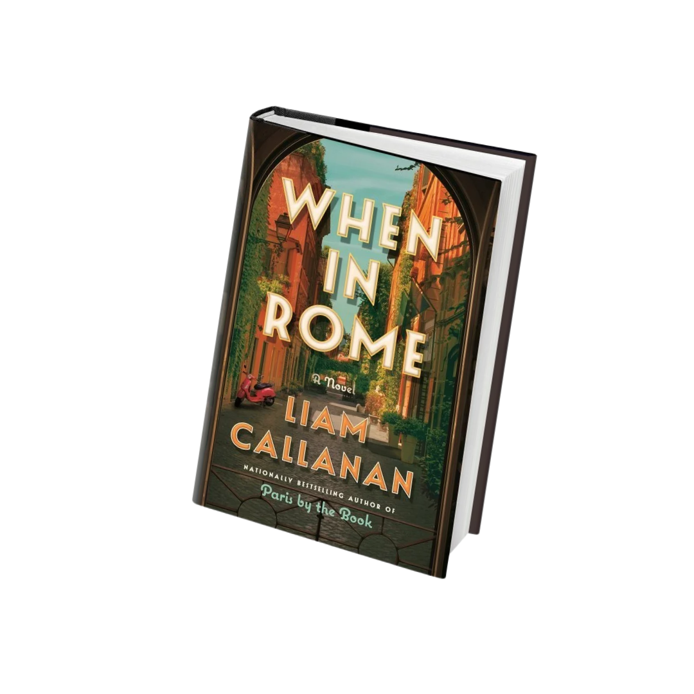
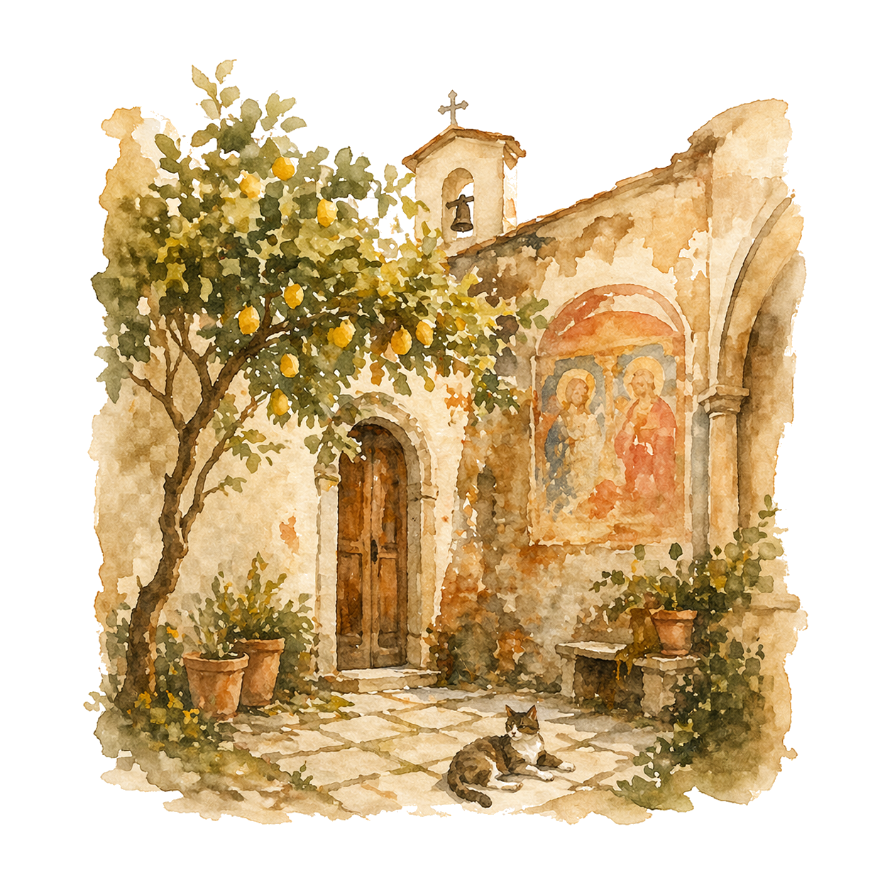
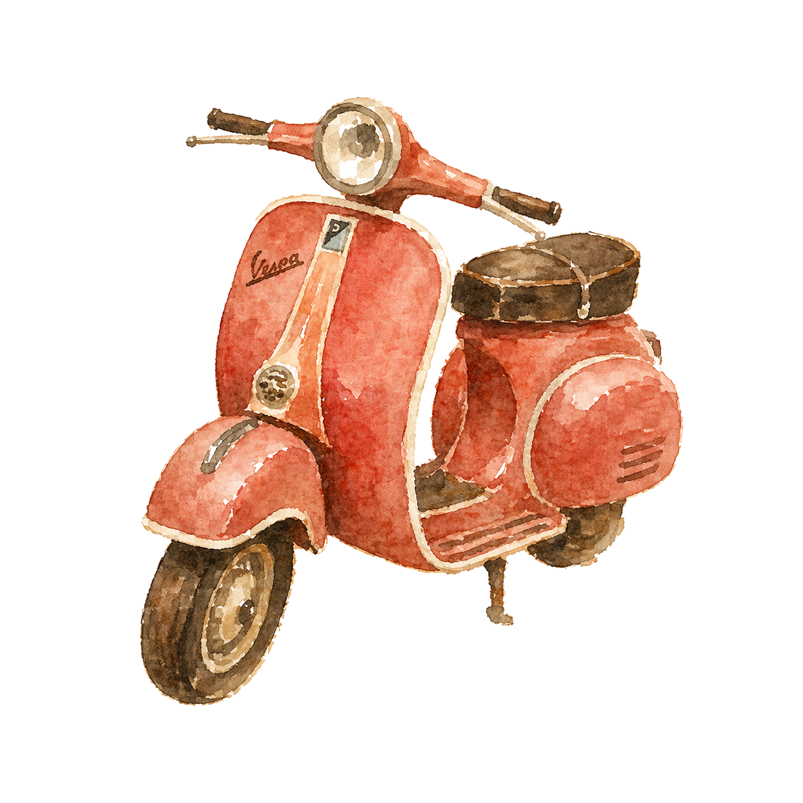
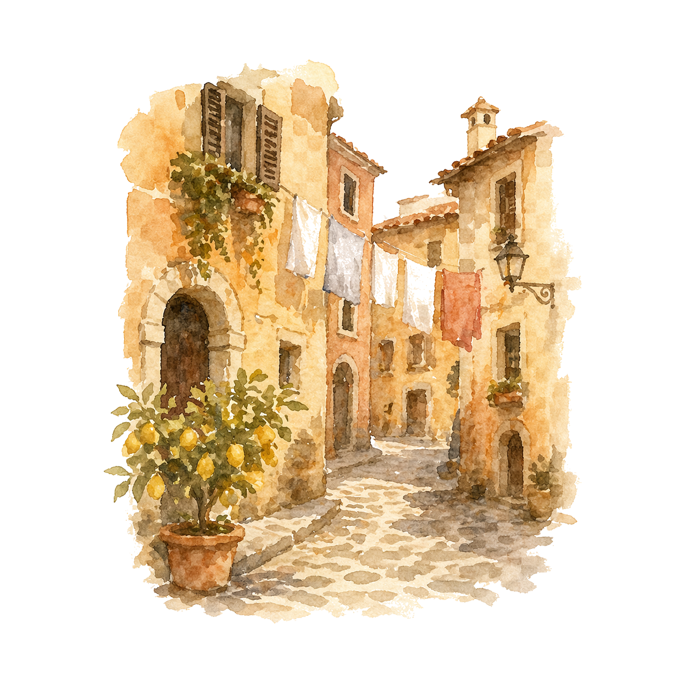
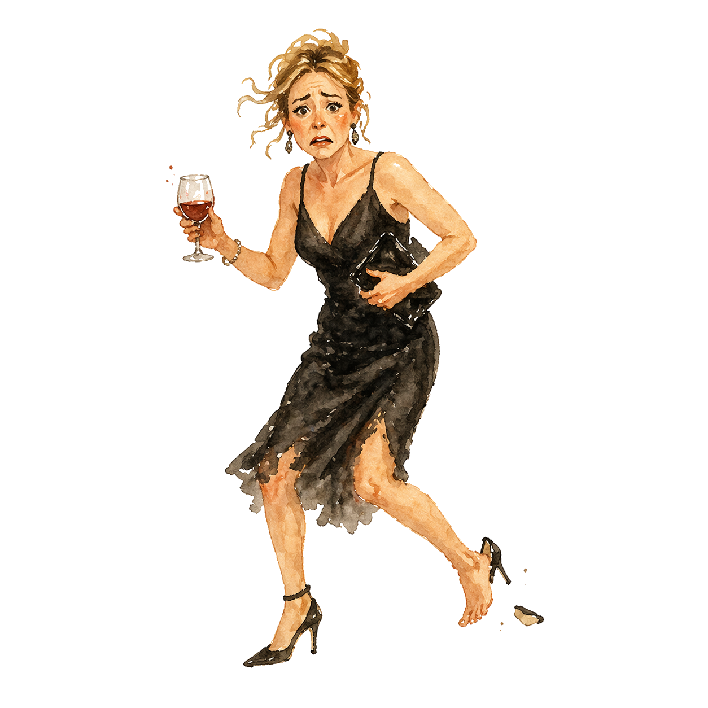

A 50 year-old real estate broker, raw from life, is sent to Rome to find a buyer for a crumbling convent. She becomes enamored with the Eternal City and makes newfound friends with three madcap nuns, vowing to save them from ruin.
But when the fading movie star she walked away from thirty years ago suddenly shows up across the piazza, she realizes that hell is paved with good intentions...and that God has one sick sense of humor.

Three nuns in Rome.
One American woman who forgot how to live.
One man she’s still dying over.
A lot of hell to pay.

Older audience films consistently over-perform...
The audience shows up — when somebody bothers to make something for them.
Hollywood, take note — audiences over 50 are an ignored opportunity.

A real estate broker renowned for finding buyers for properties nobody else can move. She’s brilliant at it, which is the problem — she’s spent her career helping others let go of things while holding onto very little herself.
After turning fifty and spectacularly panic-attacking at her college reunion in front of He We Will Not Mention, she desperately needs a change of venue. Truth be told, a convent in Rome feels like the perfect place right now. It’s quiet, peaceful, and she’s more or less celibate.
Along the way, Claire will learn to break bad habits with the help of old gals in habits. Truly embracing La Dolce Vita, she comes to realize that reinvention and love aren’t solely reserved for the young. In the end, she stops looking backward at the life she might have lived and instead chooses the one she still can.

He was famous once. Can’t walk through airports famous. Now he’s the guy your mom recognizes. He’s in Rome shooting a godawful B movie that will by no means resurrect his career, yet he still galavants around like an A list owner of a tequila brand.
Claire ran from him thirty years ago for no less than 1,001 sound reasons and yet her knees still have wobbling issues around him. And now stuck in life’s purgatory, Marcus suddenly begins to see Claire anew, and a life he missed out on.
He’s Hugh Grant in Bridget Jones, Julia Roberts in Notting Hill and Bill Nighy in Love Actually combined. He has a lot of growing up to do...and there are three nuns more than happy to lend a hand.
“We’re getting older,” Marcus said.
She pursed her lips and nodded. “Then act it.”
“A person doesn’t outgrow
the need for a new beginning.”
A writer/director/producer and content creator for large and small screens, Brandon’s produced projects include Netflix’s international hit, Love & Gelato, a modern retelling of Benji, Universal’s Love Happens with Jennifer Aniston, the Kevin Costner film Dragonfly, and the Fox series John Doe, among others.
He has created branding campaigns and directed spots for the likes of Ford Motor Company, Liberty Mutual, Lincoln Motor Company, The Ad Council, and Feeding America to name a few.
Brandon most recently worked on an eight-episode series for Skydance starring Tim McGraw; and is prepping his next directorial effort for Wildflower Entertainment, Somebody’s Daughter, based on the hit country single.
He is represented by United Talent Agency and TFC Management.